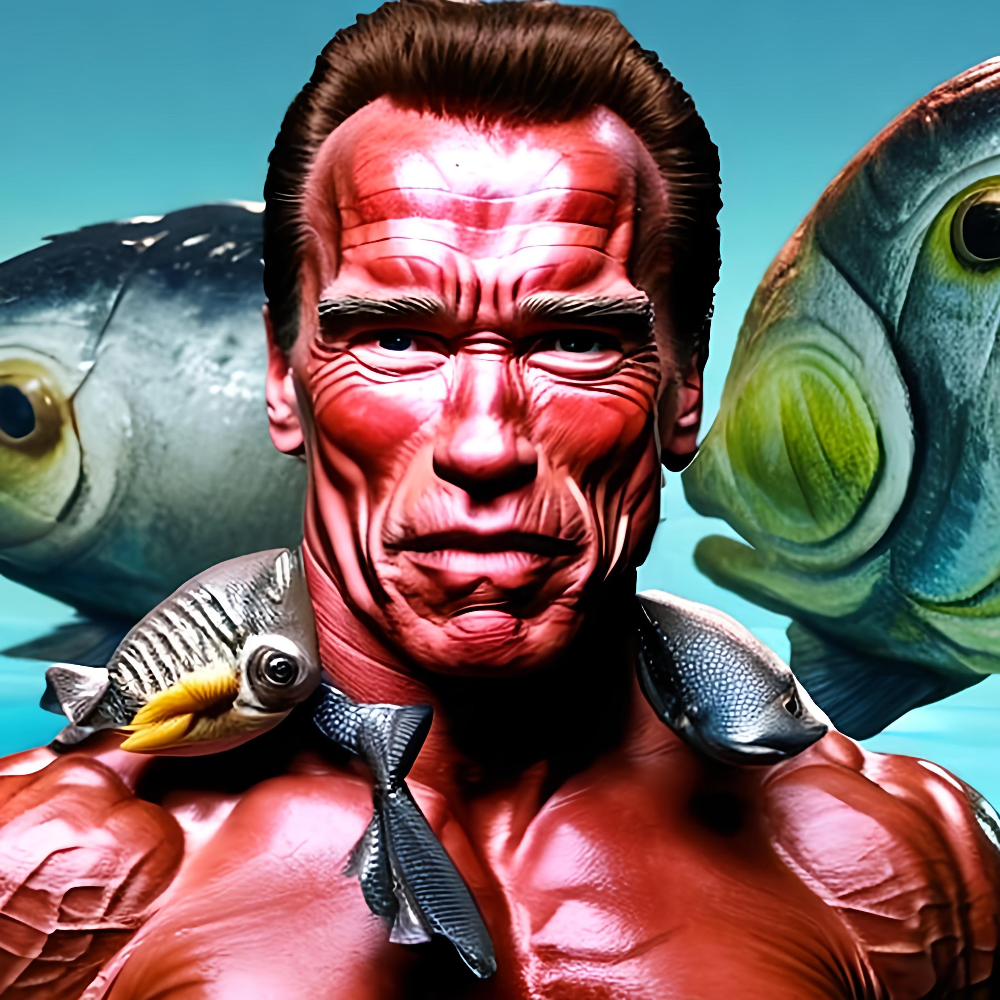
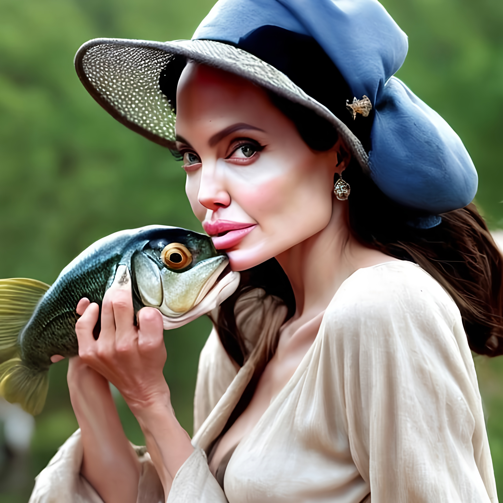
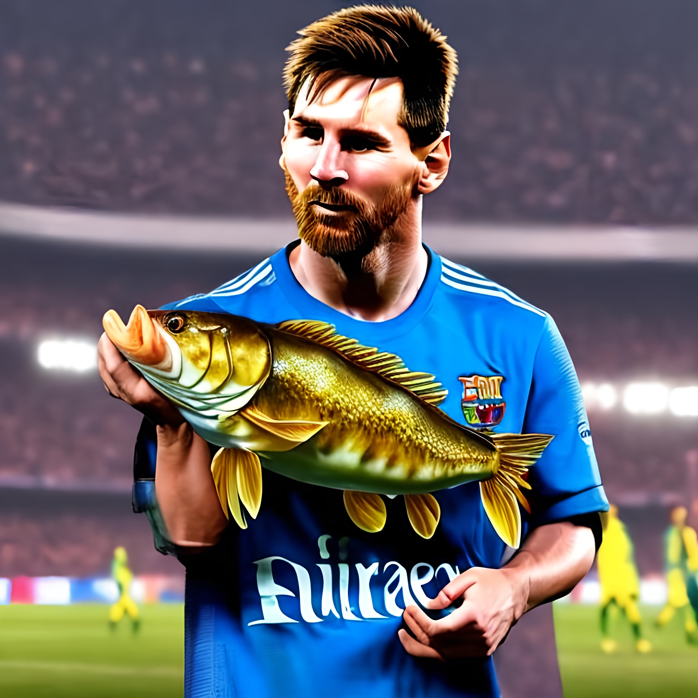
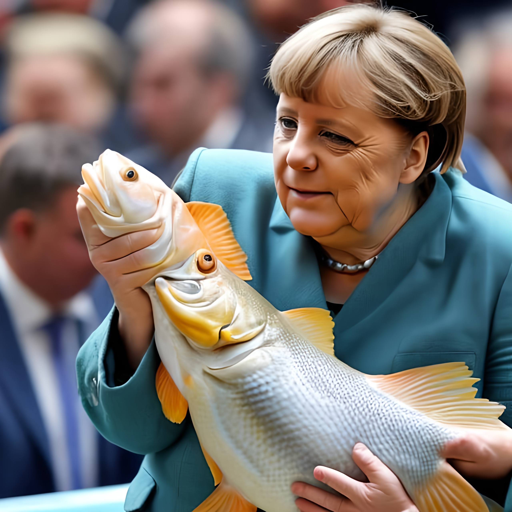

Arnold Tschuaseneger
"Ah, yes! Fish hats, they're fantastic! I love lifting weights with my fish buddy, Finny. He wears this tiny, stylish hat while we pump iron together at the aquatic gym. We do fish curls, you know? And he's got this cute little sweatband! It's a real oceanic bonding experience, let me tell you. I even tried teaching him to say 'Hasta la vista, bubbles!' but he's still working on his pronunciation. Anyway, if you've got a fishy friend, get them a hat, and let the underwater gains begin! Hasta la vista, fish lovers!"
Angelina Jolie
"Darlings, fish hats are an absolute must-have in my underwater adventures! When I'm not busy saving the world or filming blockbusters, I love playing peekaboo with my pet fish, Sir Finley. He's got this teeny-tiny fedora that just screams 'underwater chic.' On set, I take him to the craft service table, and he's a hit with the crew. You wouldn't believe the fishy conversations we have during breaks – we even discuss potential movie roles for him! Fish hats, my lovelies, are the ultimate accessory for glamorous aquatic escapades. So, don't be koi, dive into fish fashion today!"
Leopold Messi
"Hey there, folks! You know, when I'm not scoring goals on the pitch, I'm bonding with my pet fish, Messi Jr. That's right, he's named after yours truly! And let me tell you, he's got this incredible fish-sized soccer hat – it's like a miniature FC Barcelona kit! We train together, working on our dribbling and fin-ishing skills. Messi Jr. has got some serious agility! Sometimes, I even ask him for penalty-taking tips, and he just swims circles around me. Fish hats, they're not just for fish; they're for champions! So, whether you're a fish or a footballer, embrace the hat and score big! "
Angela Merkel
My dear friends, when I'm not busy with politics, I find solace in the company of my beloved pet fish, Fritz. He's a steadfast companion and an unexpected advisor. You see, Fritz wears the most charming little fish hat that I got as a gift from a distant relative. It's become a symbol of our unspoken bond. During late-night sessions in the Bundestag, I often find myself contemplating policy decisions while gazing into Fritz's fishbowl. His fishy wisdom transcends party lines, and his hat exudes an air of diplomacy. Fish hats, my friends, bring us all a bit of bipartisan joy. So, let's embrace these aquatic headpieces and swim toward a brighter future!